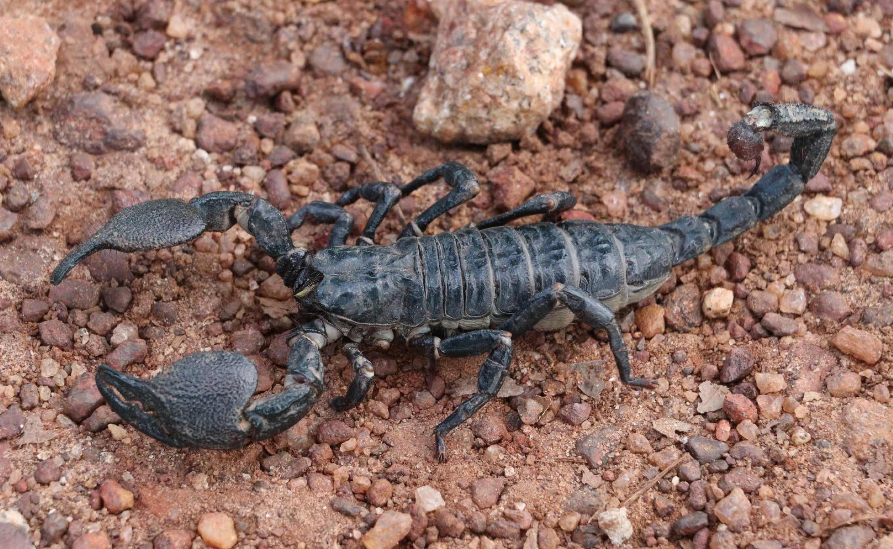
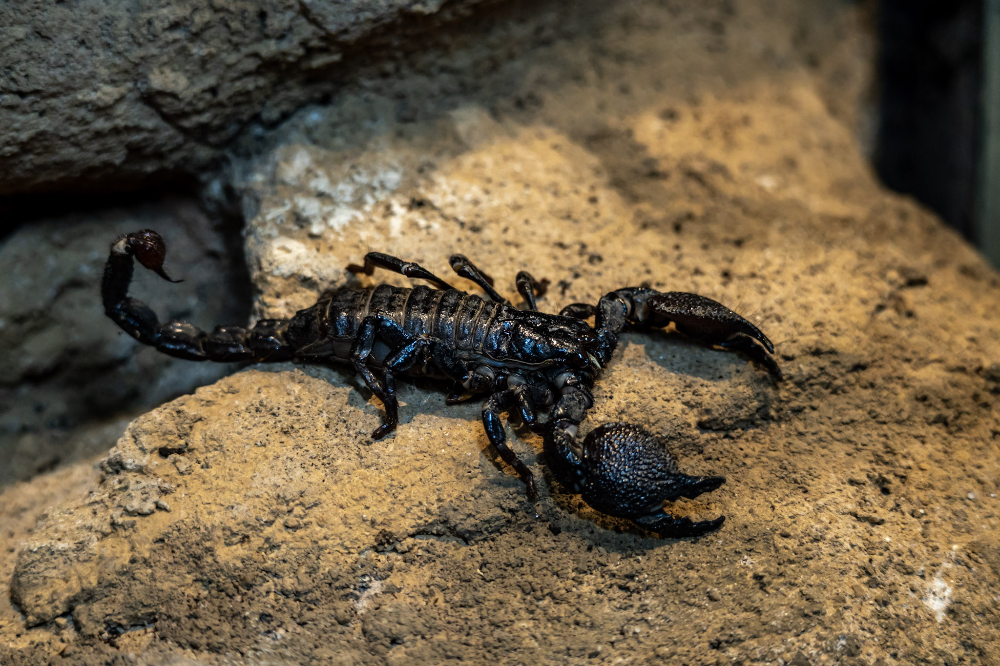

O Escorpião-imperador é um dos maiores escorpiões do planeta, chegando a mais de 20 centímetros de comprimento. Ele vive em regiões quentes, como desertos, savanas e florestas secas, onde se abriga durante o dia em buracos ou sob pedras. É um predador noturno que caça principalmente insetos e outros pequenos invertebrados, usando seu veneno para imobilizar as presas.
 Embora seja grande e imponente, o veneno do Escorpião-imperador é relativamente fraco para os seres humanos, causando geralmente apenas dor local e inchaço. Mesmo assim, é sempre importante observar esse animal de longe, principalmente em regiões onde eles são comuns. Ele desempenha um papel crucial no ecossistema, mantendo o controle de populações de insetos e contribuindo para o equilíbrio ambiental.
Além de suas funções ecológicas, o Escorpião-imperador chama a atenção por sua aparência única e comportamentos curiosos. Ele é capaz de brilhar sob luz ultravioleta, uma característica fascinante para estudiosos e amantes da natureza. Esse escorpião nos lembra que mesmo criaturas que assustam podem ser essenciais para o mundo natural.